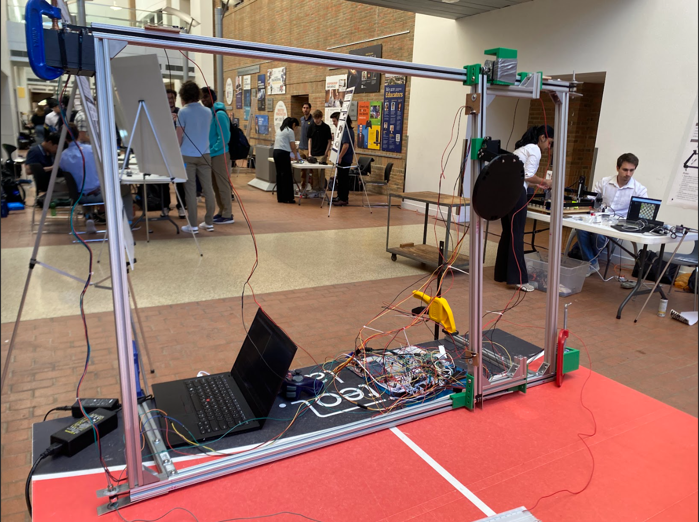

Project Overview
This project is a 2-axis robotic gantry system designed for ping-pong target practice. It integrates a real-time vision system for automated ball tracking and interception, alongside multiple manual control options.
The core objective was to create a versatile and responsive robotic system by interfacing various sensors, controllers, and microcontrollers, bridging the gap between high-level computer vision and low-level hardware control. The system is built on an 80/20 aluminum frame, driven by stepper motors, and controlled by an STM32 microcontroller.
Control Modes
A key feature of the project is its ability to switch between three distinct operational modes via a physical button, with the current mode displayed on an LCD screen.
Automated Mode
Real-time ball tracking using OpenCV for autonomous paddle positioning.
Wii Remote Control
Custom wireless control using a Wii remote's IR camera and accelerometer.
Joystick Control
Direct manual control of the gantry's X/Y axes via a PS2 joystick.
Technical Implementation
Mechanical & Electrical Design
The gantry frame is constructed from 80/20 aluminum extrusions for rigidity. NEMA stepper motors drive a chain and pulley system. For safety and calibration, physical limit switches are installed at the ends of each axis to halt motor movement.
Control Firmware (STM32)
The system's brain is an STM32L4R5ZI-P microcontroller programmed in C. The firmware is highly interrupt-driven to ensure low-latency responses, managing motor control via PWM timers and multiple communication protocols (SPI, I2C, UART) simultaneously.
Vision System (Raspberry Pi)
A Raspberry Pi 4 is dedicated to the computer vision task. A Python script leverages OpenCV to capture video, isolate the ball using color thresholding in the HSV space, calculate its centroid, and transmit the coordinates to the STM32 over SPI.
Documentation & Code
Project Documents
The original proposal and poster provide a comprehensive overview of the design goals and outcomes.
Firmware Snippet
/* Main control loop for Gantry System */
int main(void)
{
// ... Initializations ...
printf("Gantry Control System Initializing...\\r\\n");
// ... Peripheral Inits ...
HAL_SPI_Receive_IT(&hspi1, spi_rx_buf, SPI_BUFFER_SIZE);
while (1)
{
// Main state machine loop
switch(current_mode) {
case MODE_PI:
process_pi_coords();
break;
case MODE_WII:
process_wii_inputs();
break;
case MODE_PS2:
process_ps2_inputs();
break;
}
HAL_Delay(1);
}
}